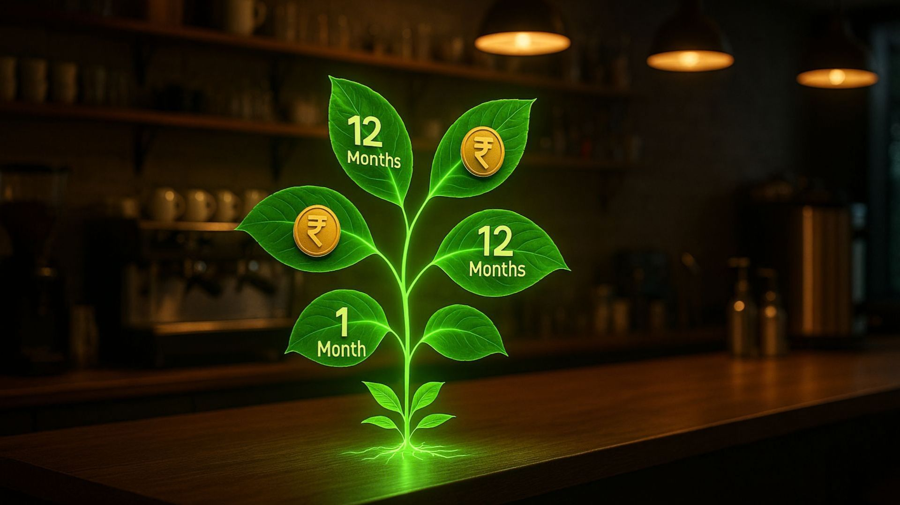
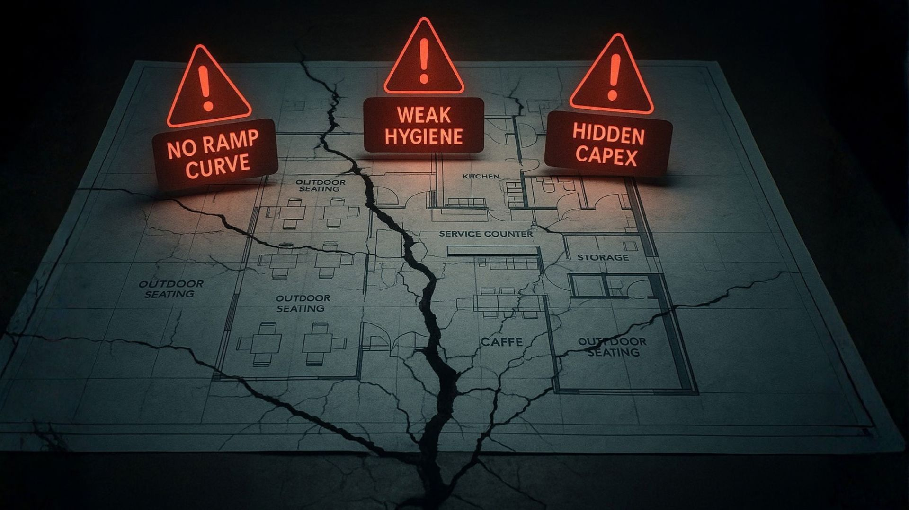
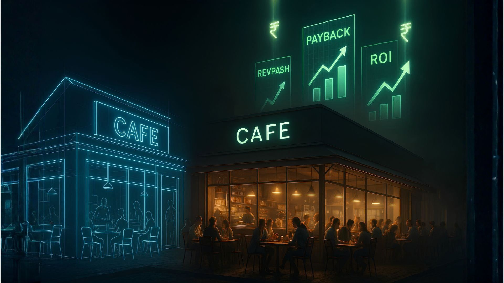

Capital follows clarity. If your design and operations make unit economics obvious (and defensible), getting money in 2025 is much easier.
Why funding really is easier in 2025 (and what that means for you)
- India's food services industry is forecast to reach ₹7.76 trillion by 2028 at ~8.1% CAGR
- CGTMSE enables banks to cover unsecured portions up to ₹10 crore
- PM MUDRA Yojana has expanded, with Shishu (≤₹50k), Kishore (₹50k–5L), Tarun (₹5–10L), and Tarun Plus (₹10–20L) tiers
The 7 unit-economics metrics decision-makers actually check
- Revenue per sq ft (and per day): Show a ramp tied to footfall drivers; benchmark against nearby competitors.
- Contribution margin: Beverage-led menus target ~65–70% gross margin; food-led formats ~55–65%.
- Throughput at peak: Apply Little's Law (L = λW) to demonstrate how operational changes reduce wait times.
- RevPASH (Revenue per Available Seat-Hour): Track by daypart and zone; fix issues through table mix optimization.
- Payback period & IRR: Present conservative, sensitivity-tested scenarios (base / –20% sales / +10% COGS).
- Time-to-revenue: Parallel workflows and off-site fabrication compress schedules 20–50%.
- Compliance readiness: Document your FSSAI (FoSCoS) path and Schedule-4 hygiene SOPs.
Funding routes you can actually use (and when)
- Bank/NBFC term loans (secured or hybrid): Best for fit-out + equipment with sub-24-month payback; discuss CGTMSE hybrid options for thin collateral.
- PM MUDRA (micro/small ticket): Ideal for carts, kiosks, and compact cafés using the Tarun/Tarun Plus tiers.
- Revenue-based financing (RBF): Useful for working capital; higher cost but flexible repayments tied to sales.
- Angels/VCs (equity): Pursue after establishing repeatable unit economics and a rollout strategy.
- Franchising (asset-light growth): Launch after your first store stabilizes; franchisees fund expansion.
The document pack that speeds approvals
- DPR (Detailed Project Report): concept, market data, competitive analysis, capex/opex, 36-month P&L with sensitivities.
- Design & Layout Set: floor plan with seat mix, BOH line, MEP loads, delivery bay.
- Compliance File: FoSCoS steps, Schedule-4 checklists, permit sequencing.
- Vendor Quotes: HVAC/hood/make-up air with testing & commissioning.
- Ops SOPs: opening/closing, temperature logs, allergen protocols, cash control.
A simple, transparent ROI model you can copy

Scenario (compact café, 600 sq ft):
- Capex: ₹22 lakh
- Steady-state sales (Month 6): ₹35,000/day
- Gross margin: 62% → ₹21,700/day contribution
- Monthly fixeds: ₹1.25–1.4 lakh/month
- Monthly contribution after fixeds: ~₹1.4–1.8 lakh
Payback: ~12–16 months (stress-tested at –20% sales and +10% COGS)
The 6 mistakes that quietly kill funding applications

- No ramp curve (a red flag to lenders)
- Ignoring peak-hour math and bottleneck analysis
- Weak hygiene/compliance story
- Hidden capex (hood, duct, fire systems)
- Menu-equipment mismatch
- Missing sensitivity analysis
Quick FAQ
Do I always need collateral?
Not necessarily; CGTMSE guarantees unsecured portions up to ₹10 crore for MSEs.
What's a realistic "fast" opening?
With parallel licensing and off-site fabrication, a soft launch is achievable in 30–45 days; industrial/modular methods enable 20–50% faster timelines.
Which number should I headline in the pitch?
Lead with RevPASH trend and peak-hour throughput; these are the real operational levers.

Action prompts you can use today
- Build a one-page Unit Economics Sheet
- Assemble a Compliance Tracker (FoSCoS, Schedule-4, city permits)
- Get two HVAC/hood/make-up air quotes with commissioning and fire provisions
- Draft a 30/60/90-day timeline overlapping design, licensing, procurement, fabrication, and hiring
Need a design partner who thinks in unit economics, not just aesthetics? At SprintCo, we build restaurant spaces that make your ROI story easy to fund. Let's talk about your project.